简介
AI 开发者空间是面向开发者的智能开发工作空间，以 AI SHELL 为核心入口，通过自然语言交互和命令行两种模式，打通云资源操作、智能代码生成、多 Agent 协作、基础设施即代码（IaC）部署、消息渠道对接、隧道托管与远程连接等全链路开发能力，帮助开发者在统一工作台中高效完成云原生应用的开发、部署与运维。
核心能力
| 模块 | 说明 |
|---|---|
| AI SHELL | 核心入口，支持 AI 对话、TUI、命令行三种交互模式 |
| AGENTS | 9 个智能体，覆盖代码编写与分析、多 Agent 协作、DeepSeek 推理、编程辅助、个人助手、任务调度编排、AI 教学辅助等场景 |
| 环境管理 | 14 个作业环境，支持智能体、开发工具、数据库、基础设施四类分类，一键部署与管理 |
| AGENT WORK | 智能体工作平台（Beta），包含 Agent 管理、项目、任务、小队、自动化 5 个子模块，覆盖从 Agent 定义、任务承载、多智能体协作到周期自动化的完整工作流 |
| EXTENSIONS | 扩展能力，包含华为云 Skills（79 个云服务技能）和 Channels（飞书/微信/企业微信对接） |
| TOOLS | 开发辅助工具：OpenViking 代码理解与重构、DevBridge 隧道管理 |
| RESOURCES | 资源入口：文档站（本操作指南）与 Agent 接入（IACMCPServer 使用指南） |
| 文件管理 | 工作区文件操作：搜索、批量处理、上传、新建文件/文件夹，右侧面板快速访问 |
| 设置与反馈 | 账号信息与主题设置（浅色 / 深色 / 跟随设备），以及问题反馈入口 |
| 视频指导 | 核心功能与实操方法的视频教程，支持按 CodeArts、AgentWork、WorkSwarm、作业环境、DevBridge、OpenViking 分类筛选查看 |
为什么需要 AI 开发者空间
在华为云上进行开发与运维时，开发者常遇到以下挑战：
- 云资源操作门槛高：ECS、CCE、OBS 等服务 API 与 CLI 命令繁多，学习成本高
- 自然语言到命令的转换难：想把想法落地为可执行的云操作命令，需要大量检索与试错
- 代码理解与重构成本高：大型项目中代码逻辑复杂，缺乏智能化的代码分析与重构建议支持
- 多云 IaC 编排学习曲线陡峭：多云资源编排需要掌握不同云平台的 IaC 语法，切换成本高
- 隧道与远程连接配置复杂：本地开发环境与云环境的安全连接配置繁琐，端口管理与转发耗时
- 能力分散：代码智能体、多 Agent 协作、IaC 部署、隧道管理等工具散落各处，难以协同
- 多平台集成繁琐：难以将 AI 能力接入飞书、微信、企业微信等消息平台
首页
登录 AI 开发者空间后默认进入首页。页面左侧为全局导航（AGENTS、环境管理、EXTENSIONS、TOOLS、RESOURCES、文件管理、设置与反馈），右侧为资源管理器面板；主区域从上到下分为四个板块：
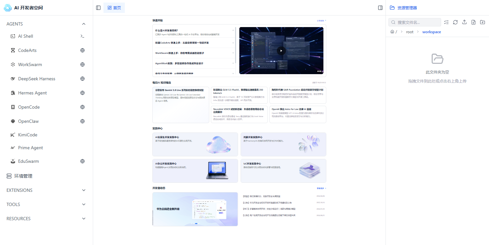
| 板块 | 说明 |
|---|---|
| 快速开始 | 产品与核心功能的视频教程列表（什么是 AI 开发者空间、码道 CodeArts、WorkSwarm、AgentWork 等），点击即可在线播放 |
| 每日AI知识精选 | 每日更新的大模型与 AI 领域精选资讯，涵盖前沿模型发布、技术进展与实践案例 |
| 实践中心 | AI 云原生、鸿蒙、AI 办公、IaC 四大开发实践中心，按场景提供端到端的开发实践资源 |
| 开发者动态 | 华为云开发者活动、任务福利与平台最新动态 |
AI SHELL
AI SHELL 是产品的核心入口，秉持“智驱华为云，对话即部署”的产品理念，大模型驱动，支持自然语言对话、智能排错与云端在线终端，提供三种交互模式：
| 模式 | 用途 | 说明 |
|---|---|---|
| AI 对话 | 自然语言交互 | 用自然语言描述需求，AI 生成命令并执行（默认模式） |
| TUI | 终端交互 | 终端界面（Terminal UI），面向习惯终端操作的开发者 |
| 命令行 | 命令式操作 | 面向熟悉 CLI 的开发者，直接输入命令 |
操作步骤：
- 在左侧 AGENTS 概览下点击 AI SHELL，进入 AI 对话界面
- 点击 「新建」创建会话，可指定工作目录（CWD），缺省为
/root/workspace - 在输入框用自然语言描述需求（例如"查询所有运行中的 ECS 实例"），按 Enter 发送（Shift+Enter 换行）
- 输入
/mode可随时切换「AI 对话」「TUI」「命令行」模式

输入增强：
- 输入
/触发快捷指令：/clear、/compact、/cwd、/help、/mode、/model、/new、/rename、/sessions、/settings - 输入
$快速引用技能 - 右侧资源管理器中可将文件「添加到对话」作为上下文
点击输入框左下方的 mode: Semi-Auto 按钮，可打开会话配置：
| 配置项 | 说明 | 可选值 |
|---|---|---|
| Session Mode | 控制 AI 的自主性与安全边界 | Auto / Semi-Auto（默认）/ Manual / Plan |
| Reasoning Level | 控制模型产生的推理量 | Low / Medium（默认）/ High |
| Model | 选择使用的 LLM 模型 | hwdevspace/deepseek-v4-flash-0731（默认）/ hwdevspace/deepseek-v4-pro-0813 / hwdevspace/glm-5.1 / hwdevspace/glm-5.2 |

AGENTS 概览
AGENTS 模块默认展示 CodeArts、WorkSwarm、DeepSeek Harness 智能体，根据部署的环境状态动态展示 Agent 入口， 目前可以提供 9 个智能体，覆盖代码生成、多 Agent 协作、个人助手、DeepSeek 模型推理、AI 教学辅助等场景。
CodeArts
CodeArts 是华为云码道代码智能体 CLI，支持代码编写、分析与优化。支持 TUI（终端模式） 和 WebUI（网页模式） 两种使用方式。
操作步骤：
- 点击左侧菜单 CodeArts，进入该智能体
- 选择使用模式：TUI（点击名称直接进入终端界面）或 WebUI（点击右侧 WebUI 按钮进入网页界面）
- 在 TUI 终端或 WebUI 网页中输入代码编写、分析或优化需求
- CodeArts 生成代码建议或分析报告，确认后执行查看结果
TUI 模式（终端界面）
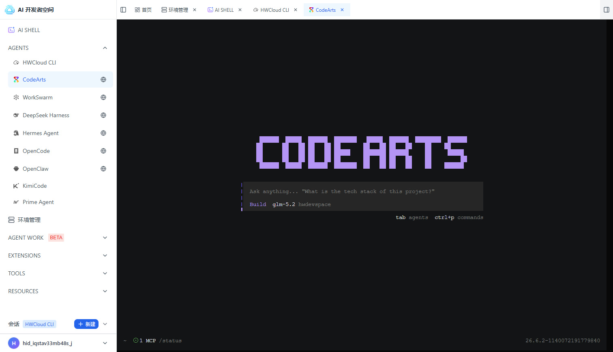
WebUI 模式（网页界面）
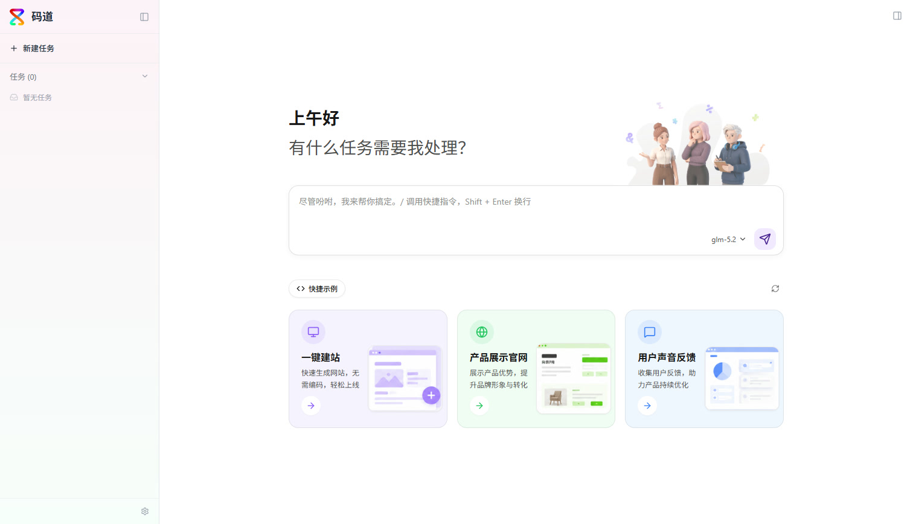
WorkSwarm
WorkSwarm 是多 Agent 协作框架，可自动将复杂任务分解并分配给不同 Agent 协作完成。支持 TUI（终端模式） 和 WebUI（网页模式） 两种使用方式。
操作步骤：
- 点击左侧菜单 WorkSwarm，进入该智能体
- 选择使用模式：TUI（点击名称直接进入终端界面）或 WebUI（点击右侧 WebUI 按钮进入网页界面）
- 输入一个复杂任务
- WorkSwarm 自动分解任务并分配给不同 Agent 协作处理
- 查看各 Agent 的协作结果
TUI 模式（终端界面）
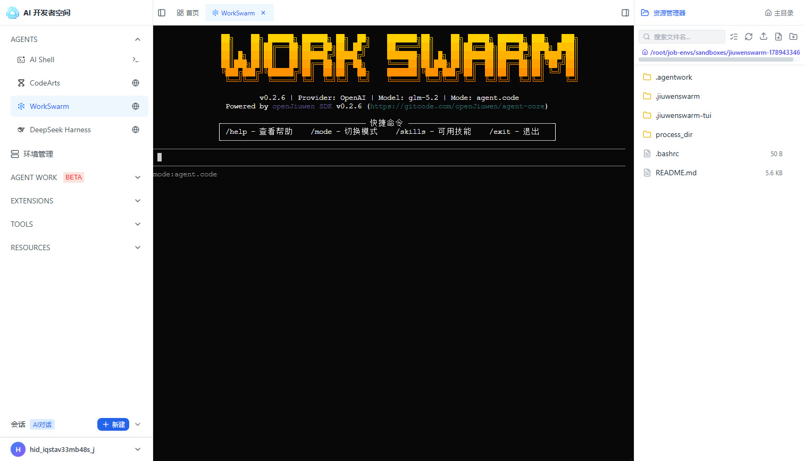
WebUI 模式（网页界面）
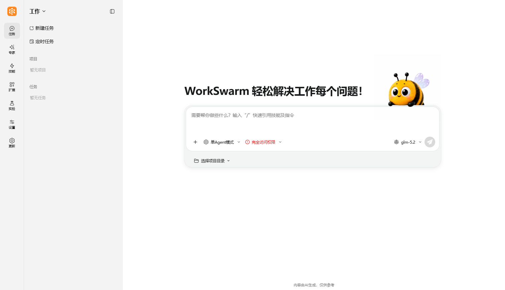
DeepSeek Harness
DeepSeek Harness 是基于 DeepSeek 大模型的 AI 推理智能体，支持高效模型推理、代码生成与自然语言理解，可无缝集成到开发工作流中。支持 TUI（终端模式） 和 WebUI（网页模式） 两种使用方式。
操作步骤：
- 点击左侧菜单 DeepSeek Harness，进入该智能体
- 选择使用模式：TUI（点击名称直接进入终端界面）或 WebUI（点击右侧 WebUI 按钮进入网页界面）
- 输入推理、代码生成或分析需求
- DeepSeek Harness 调用模型进行推理并返回结果
- 查看推理结果，根据需要调整提示词并重新执行
TUI 模式（终端界面）
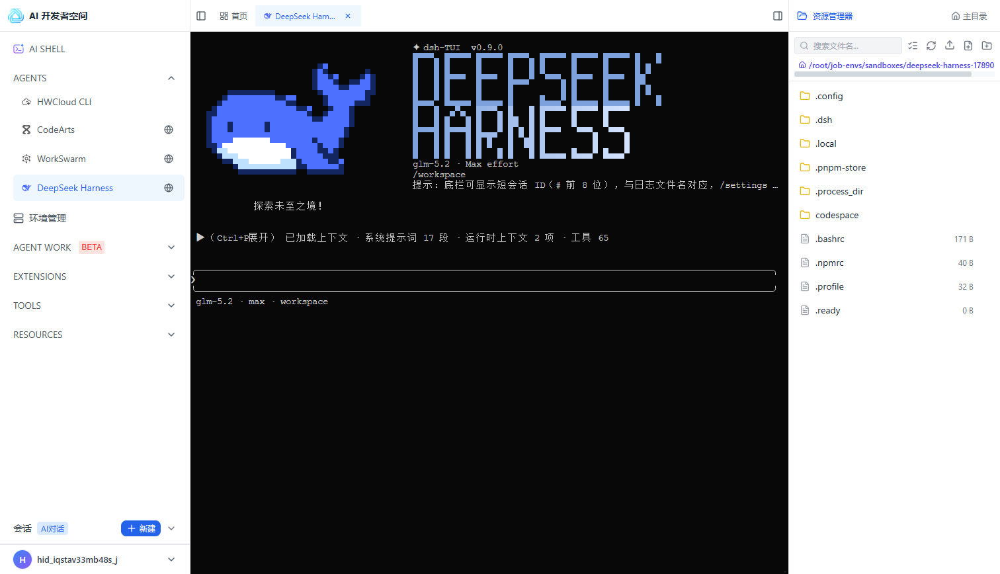
WebUI 模式（网页界面）
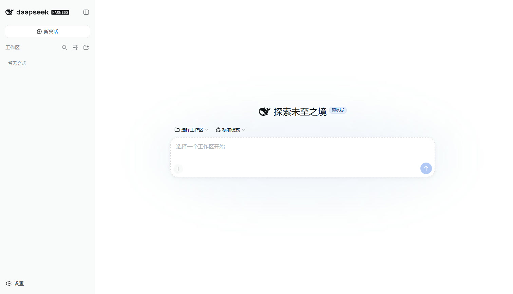
Hermes Agent
Hermes Agent 是自我改进型 AI Agent，内置学习循环与长期记忆，可持续优化自身行为。
操作步骤：
- 点击左侧菜单 Hermes Agent，进入该智能体
- 输入需要处理或改进的任务
- Hermes Agent 通过学习循环与长期记忆进行自我改进
- 查看改进后的结果
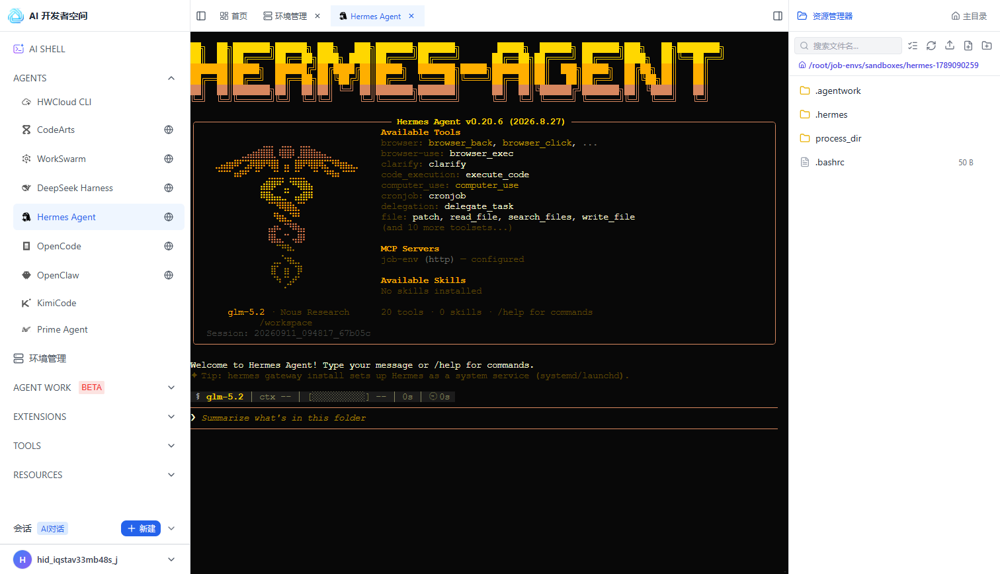
OpenCode
OpenCode 是开源 AI 编程代理，可连接任意模型完成编程任务。
操作步骤：
- 点击左侧菜单 OpenCode，进入该智能体
- 连接目标模型
- 描述编程任务
- 查看生成的代码并确认执行
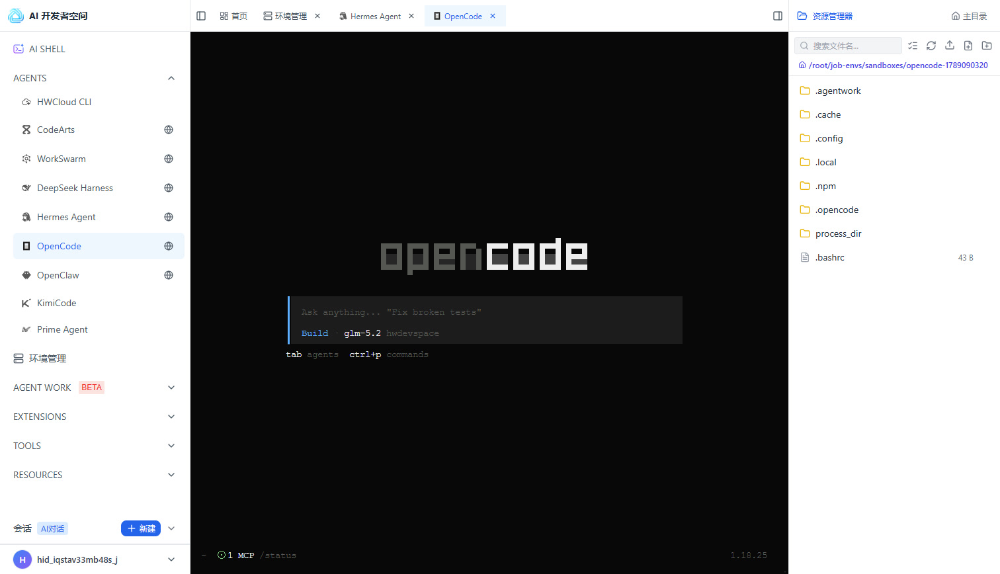
OpenClaw
OpenClaw 是开源可编程 AI 个人助手平台，支持多渠道消息接入与自动化任务处理，可处理各类个人任务。支持 TUI（终端模式） 和 WebUI（网页模式） 两种使用方式。
操作步骤：
- 点击左侧菜单 OpenClaw，进入该智能体
- 选择使用模式：TUI（点击名称直接进入终端界面）或 WebUI（点击右侧 WebUI 按钮进入网页界面）
- 配置个人助手参数与渠道接入
- 输入任务，OpenClaw 自动执行并返回结果
- 查看执行结果，可根据需要调整配置并重新执行
TUI 模式（终端界面）
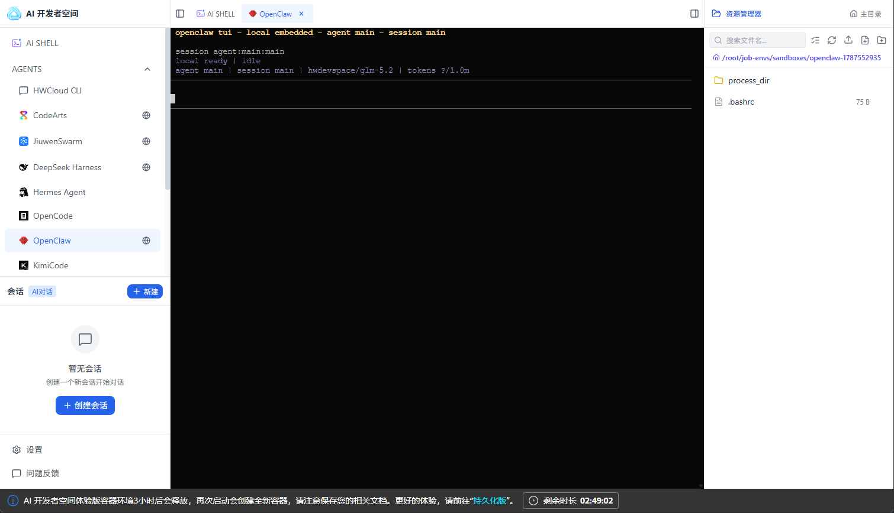
WebUI 模式（网页界面）
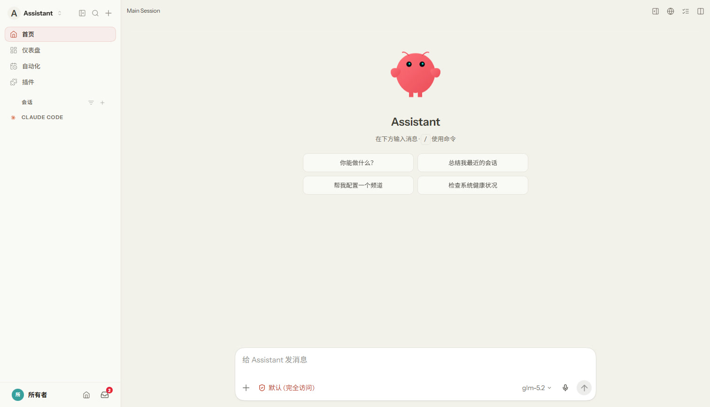
KimiCode
KimiCode 是智能编程服务，支持代码阅读、编辑与命令执行。
操作步骤：
- 点击左侧菜单 KimiCode，进入该智能体
- 描述代码阅读、编辑或命令执行需求
- KimiCode 执行并返回结果
- 查看执行结果
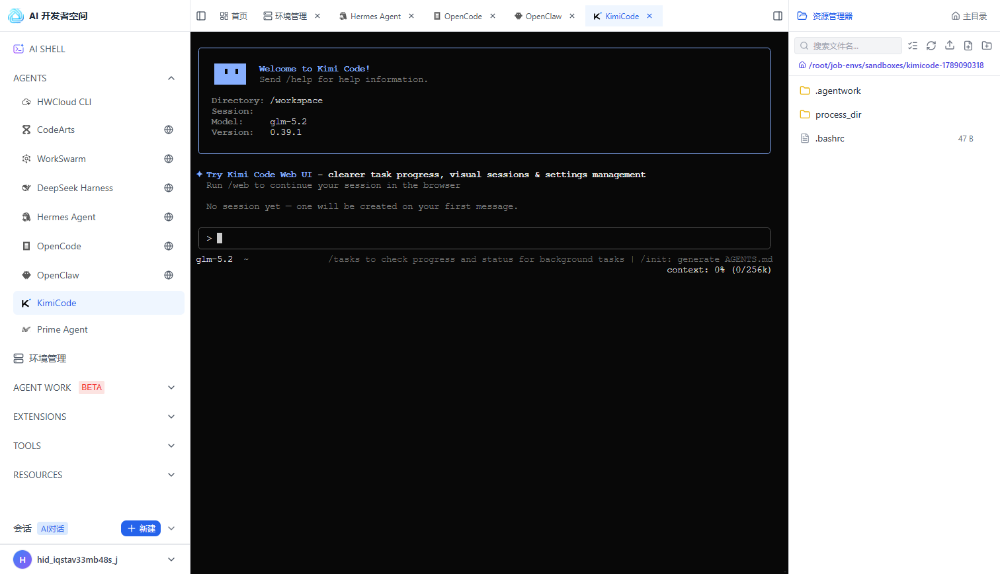
Prime Agent
Prime Agent 是智能任务调度与编排 Agent，支持将复杂任务自动拆解为子任务并协调多个执行单元协同完成。
操作步骤：
- 点击左侧菜单 Prime Agent，进入该智能体
- 输入需要处理的复杂任务或编排需求
- Prime Agent 自动拆解任务并协调执行单元进行处理
- 查看各子任务的执行结果与整体编排状态
EduSwarm
EduSwarm 是 AI 教师团队协作平台（AI 智慧课堂工作台），提供备课、上课、作业、批改、学情全流程 AI 辅助。内置今日课堂、课堂管理、班级管理、课件中心、作业中心、批改报告、教学总览、Agent 配置与统计、Edu SkillHub、Studio、学生端等功能模块，支持任务编排与定时任务。
操作步骤：
- 点击左侧菜单 EduSwarm，进入 AI 智慧课堂工作台
- 首次进入可跟随操作指引分步熟悉核心流程，或点击「跳过引导」直接开始
- 通过左侧功能栏进入今日课堂、课件中心、作业中心等模块，也可在输入框用自然语言直接下达教学任务
- 通过输入框下方可配置单 Agent 模式、访问权限与技能，选择模型后发送，EduSwarm 协同 AI 教师团队完成任务并输出结果
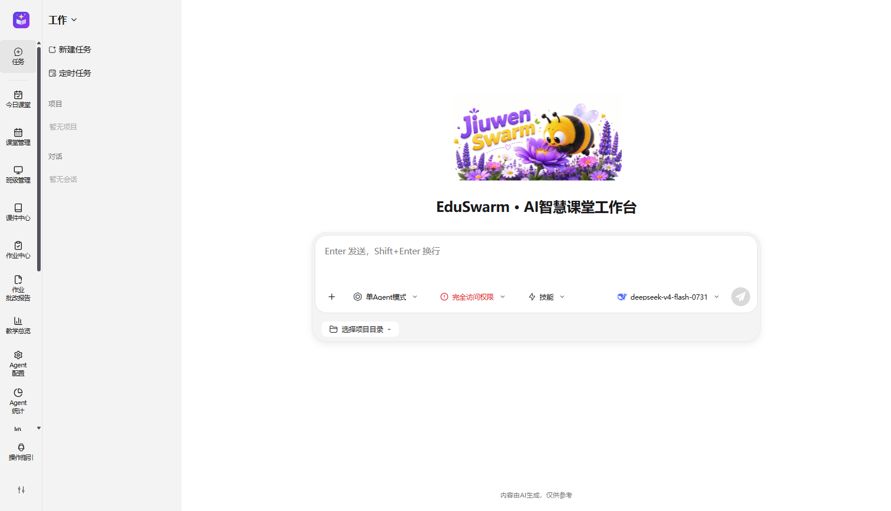
TOOLS
TOOLS 模块提供开发辅助工具，默认部署以下工具：
| 工具 | 说明 |
|---|---|
| OpenViking | 智能开发辅助工具，提供代码理解、重构建议与自动化开发支持 |
| DevBridge | 隧道管理工具，提供 Web 控制台，支持隧道创建、端口管理与远程访问 |
OpenViking
OpenViking 是智能开发辅助工具，帮助开发者理解代码、提供重构建议与自动化开发支持。支持 TUI（终端模式） 和 WebUI（网页模式） 两种使用方式。
操作步骤：
- 点击左侧菜单 TOOLS → OpenViking，进入该工具
- 选择使用模式：TUI（点击名称直接进入终端界面）或 WebUI（点击右侧 WebUI 按钮进入网页界面）
- 选择目标代码文件或项目目录
- OpenViking 分析代码并生成理解报告或重构建议
- 确认建议后执行相应操作
TUI 模式（终端界面）
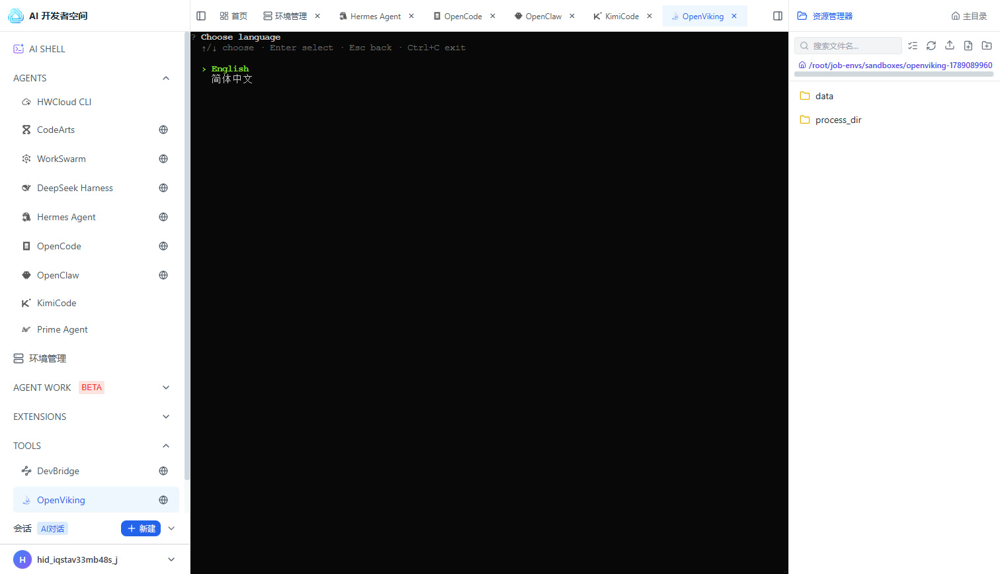
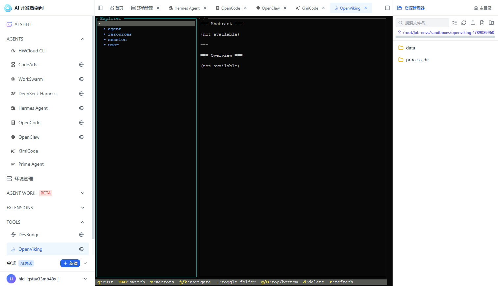
WebUI 模式（网页界面）
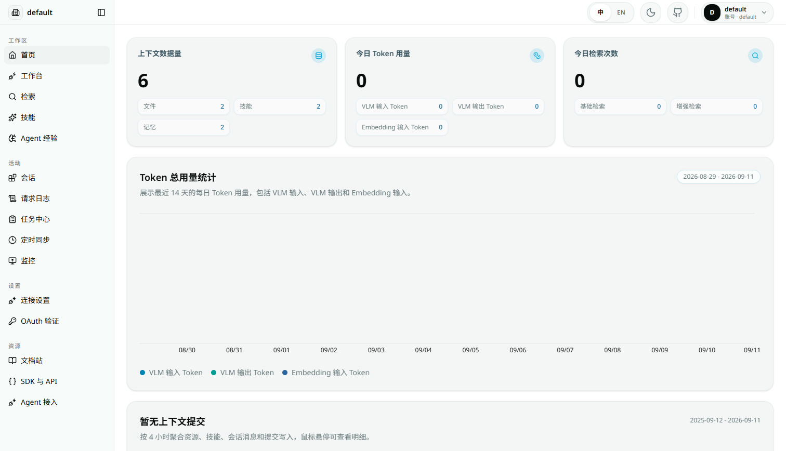
DevBridge
DevBridge 是隧道管理工具，提供开发者隧道能力，支持托管（Host）将本地端口服务暴露到公网隧道，以及连接（Connect）将远端隧道端口转发到本地。支持 TUI（终端模式） 和 WebUI（网页模式） 两种使用方式。当在环境管理中部署 DevBridge 环境后，会在 TOOLS 菜单下展示入口。
操作步骤：
- 在 环境管理 中部署 DevBridge 环境
- 部署完成后，左侧 TOOLS 菜单下会出现 DevBridge 入口
- 选择使用模式：TUI（点击名称直接进入终端界面）或 WebUI（点击右侧 WebUI 按钮进入管理控制台）
- TUI 模式下可通过命令行管理隧道；WebUI 模式下可在控制台创建隧道、管理端口映射与托管/连接进程
TUI 模式（终端界面）
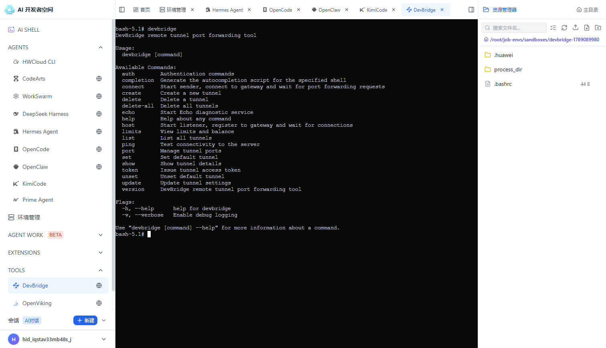
WebUI 模式（网页界面）
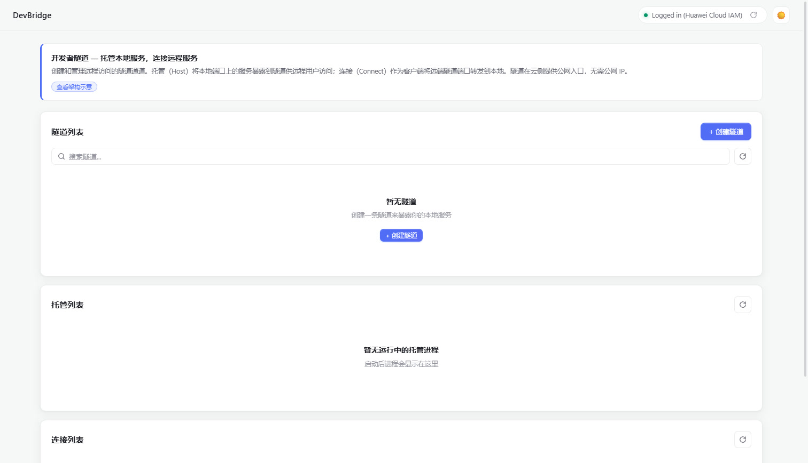
环境管理
环境管理用于浏览和部署各类作业环境，支持搜索与分类筛选：
| 分类 | 说明 |
|---|---|
| 智能体（11） | 代码智能体、多 Agent 协作、个人助手、AI 教学辅助等 11 个智能体环境 |
| 开发工具（6） | DevBridge 隧道管理、IAC MCP Server、Agent Browser、HuaweiCloud DevKit、Next AI Draw.io、鸿蒙开发环境 |
| 数据库（1） | OpenViking AI 智能体开源上下文数据库 |
| 基础设施（1） | Llama 本地 Embedding 环境 |
共 19 个环境，12 运行中，支持的作业环境：
| 环境 | 类型 | 版本 | 说明 |
|---|---|---|---|
| AI Shell | 智能体 | 内置 | AI Shell · 智驱华为云，对话即部署（TUI） |
| HWCloud CLI | 智能体 | v1.0.5 | 基础设施即代码智能体，支持 Terraform、Ansible 等自动化工具 |
| CodeArts | 智能体 | v1.0.10 | 华为云码道代码智能体，支持代码编写、分析、优化（TUI / WebUI） |
| WorkSwarm | 智能体 | v1.0.9 | 多 Agent 协作框架，自动分解问题并分配给不同 Agent |
| DeepSeek Harness | 智能体 | v1.0.9 | DeepSeek 官方多代理智能体开发平台，支持会话编排、技能管理、多模型接入 |
| Hermes Agent | 智能体 | v1.0.5 | Nous Research 自我改进型 AI Agent，内置学习循环与长期记忆 |
| OpenCode | 智能体 | v1.0.5 | 开源 AI 编程代理，可连接 Claude、GPT、Gemini 等任意模型 |
| OpenClaw | 智能体 | v1.0.4 | 开源可编程 AI 个人助手平台，支持自动化任务、工具调用 |
| KimiCode | 智能体 | v1.0.4 | 智能编程服务，支持代码阅读、编辑、命令执行、网页搜索（仅 TUI） |
| Prime Agent | 智能体 | v1.0.4 | 智能任务调度与编排 Agent，自动拆解复杂任务并协调多执行单元协同（仅 TUI） |
| EduSwarm | 智能体 | v1.0.3 | AI 教师团队协作平台，覆盖备课、上课、作业、批改、学情全流程（仅 WebUI） |
| DevBridge | 开发工具 | v1.0.1 | 隧道管理工具，支持网络隧道创建、端口管理与远程连接 |
| IAC MCP Server | 开发工具 | — | 云部署 IaC 助手，覆盖需求分析、资源规划、成本估算、Terraform 部署、排错与资源销毁全流程（未部署） |
| Agent Browser | 开发工具 | — | 无头浏览器自动化环境（未部署） |
| HuaweiCloud DevKit | 开发工具 | — | 华为云开发套件，构建、部署、运维全程受控（未部署） |
| Next AI Draw.io | 开发工具 | — | AI 自然语言生成 Draw.io 图表（未部署） |
| 鸿蒙开发环境 | 开发工具 | — | 基于 GLM 模型鸿蒙增训、深度适配 ArkTS 语言，支持云端编译打包，支持云端 + 本地模拟器调测（待开放） |
| OpenViking | 数据库 | v1.0.2 | AI 智能体的开源上下文数据库 |
| Llama | 基础设施 | — | 基于 llama.cpp 的本地 Embedding 环境，内置 bge-small-zh-v1.5 向量模型（未部署） |
| SRE | 智能体 | — | 环境运维、故障排查、扩缩容规划、费用查询（待开放） |
操作步骤：
- 点击左侧 环境管理 进入环境列表
- 使用顶部搜索框检索环境，或按分类（智能体 / 开发工具 / 数据库 / 基础设施）筛选
- 每个环境提供 TUI（终端界面）或 WebUI（网页界面）入口
- 支持停止、删除操作，部分环境支持升级

AGENT WORK
AGENT WORK（Beta）是智能体工作平台，提供从 Agent 定义、任务承载、多智能体协作到周期自动化的完整工作流。在左侧导航展开 AGENT WORK 菜单，包含 5 个子模块：
| 子模块 | 说明 |
|---|---|
| Agent 管理 | 创建和管理自定义 AI Agent，配置人格、模型与运行时 |
| 项目 | 承载 Agent 任务的容器，定义标准与验证规则，支持关联代码仓库自动校验 |
| 任务 | Agent 任务目标管理，跟踪任务执行状态与进度 |
| 小队 | 将多个智能体组合为协作小队，由 Leader 协同完成复杂任务 |
| 自动化 | 为智能体或小队安排周期性任务 |
Agent 管理
管理空间内的 AI Agent 实例。内置 AI SHELL Agent 默认在线，支持通过 聊天 直接对话，或通过 IM 连接 接入即时消息渠道：
- 点击左侧 AGENT WORK → Agent 管理 进入 Agent 列表
- 使用顶部搜索框按名称、模型检索 Agent，点击 我的 SKILL 查看可用技能
- 点击 + 创建 Agent，填写 Agent 名称与人格，选择运行时，可配置环境变量、Skills 与 MCP 服务器
- 通过快速入口开关控制 Agent 展示，使用 聊天 / IM 连接 快捷操作
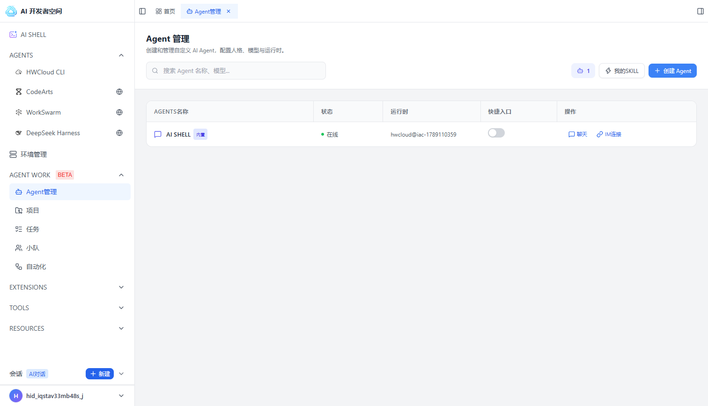
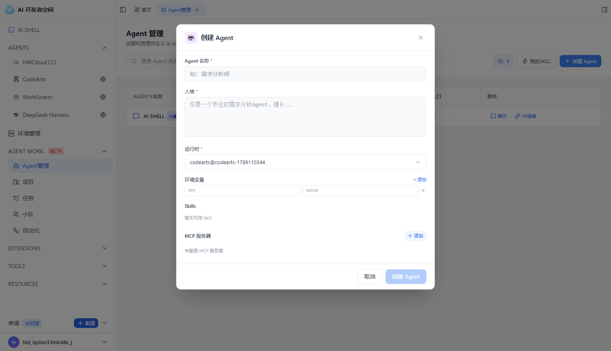
项目
项目是承载 Agent 任务的容器，可定义标准与验证规则，支持关联代码仓库自动校验：
- 点击左侧 AGENT WORK → 项目 进入项目列表
- 点击 + 新建项目（首次使用可点击 + 创建第一个项目），选择项目类型（无仓库项目 / 代码仓库），填写项目名称与验收要求
- 支持按项目名称搜索与筛选
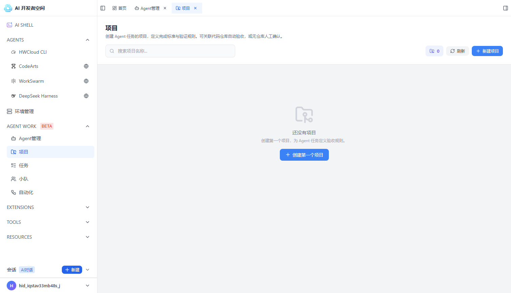
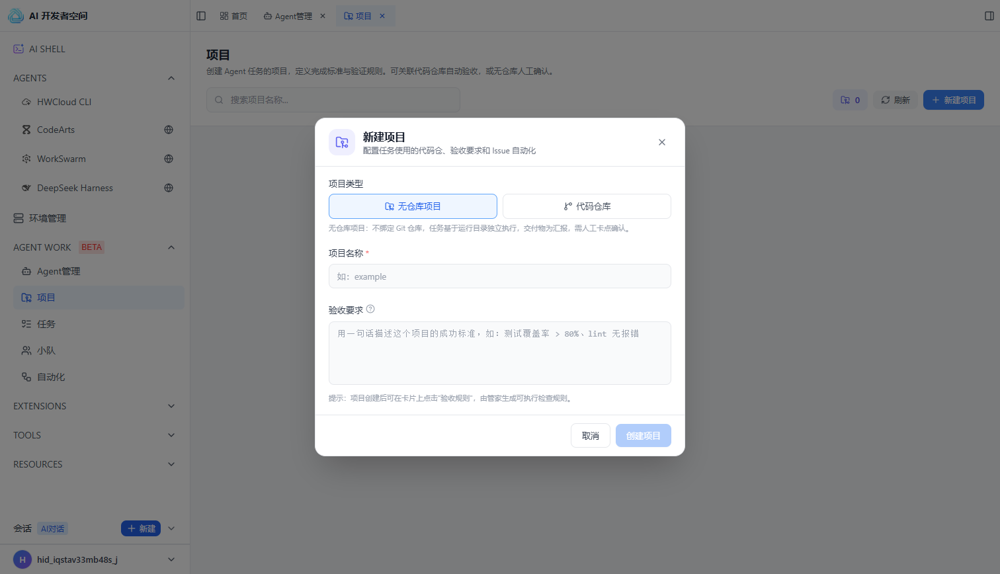
任务
面向目标的任务管理，实时跟踪 Agent 执行状态与进度：
- 点击左侧 AGENT WORK → 任务 进入任务列表
- 点击 + 新建任务（首次使用可点击 + 创建第一个任务），填写标题与描述，选择负责人（Agent 或小队）与所属项目
- 注意：新建任务需至少存在一个项目，请先在 项目 页面创建项目
- 在任务列表中跟踪 Agent 执行状态与进度
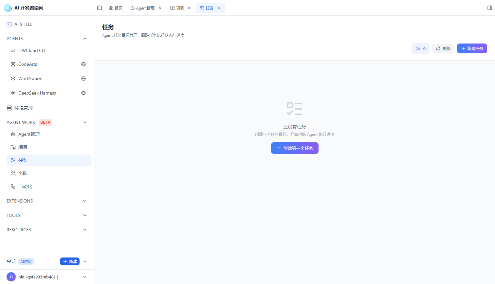
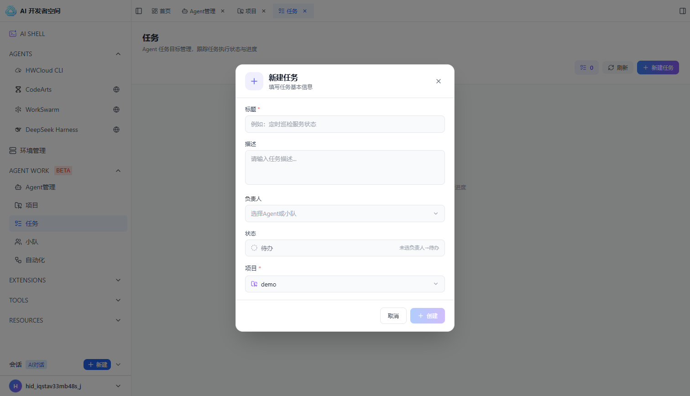
小队
将多个智能体组合为协作小队，由 Leader 协同完成复杂任务：
- 点击左侧 AGENT WORK → 小队 进入小队列表
- 点击 + 创建小队（首次使用可点击 + 创建第一个小队），设置名称与 Leader，勾选成员，可指定审查者并填写小队介绍与协作说明
- 支持按小队名称、Leader 或成员搜索
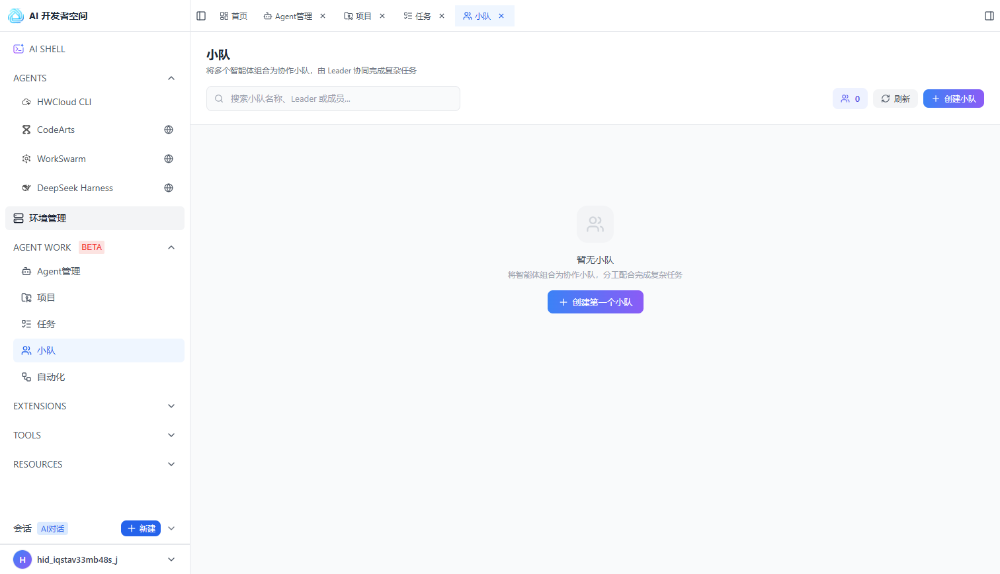
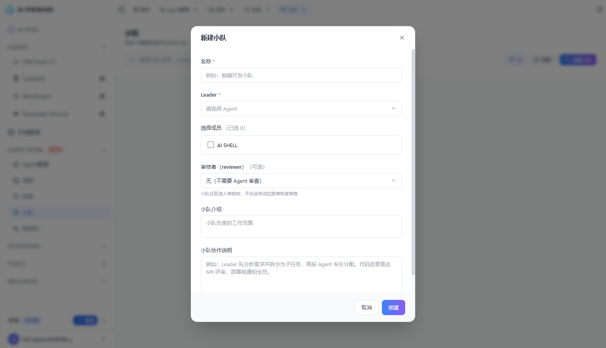
自动化
为智能体或小队安排周期性任务，实现定时自动执行：
- 点击左侧 AGENT WORK → 自动化 进入自动化列表
- 点击 + 新建 创建自动化计划：填写计划名称与任务内容，选择所属项目与负责人，设置触发时间（支持 高级 Cron 表达式）
- 支持按名称搜索自动化任务
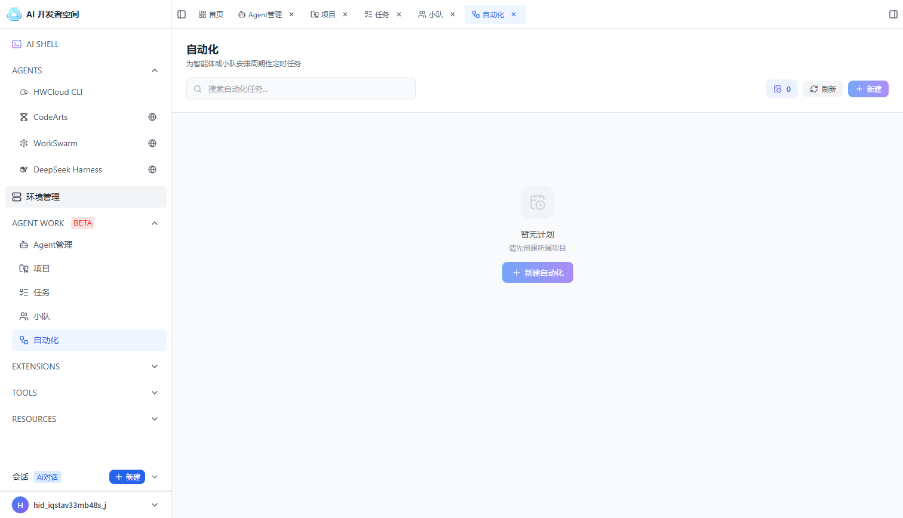
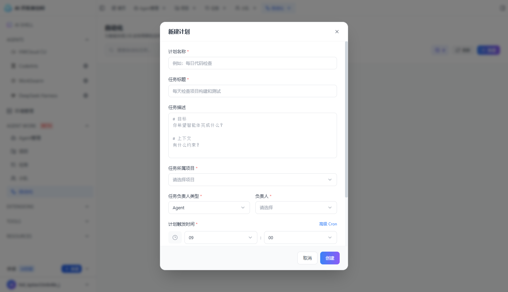
EXTENSIONS
EXTENSIONS 模块提供扩展能力入口，包含华为云 Skills 和 Channels 两个子模块：
| 子模块 | 说明 |
|---|---|
| 华为云 Skills | 预置的华为云服务技能集合，提供云资源查询、运维等快捷能力 |
| Channels | 消息渠道连接管理，支持飞书、微信、企业微信等平台对接 |
华为云 Skills
华为云 Skills 是技能市场，提供华为云各产品的技能（当前 79 个，可查看已安装数量）。
| 技能类别 | 示例 | 用途 |
|---|---|---|
| 昇腾 Ascend NPU | ascend-command、models-deploy | NPU 管理、模型部署、算子优化 |
| 容器 CCE / CCI | cluster-management、metric-analyzer | 集群管理、事件分析、指标分析 |
| 云服务器 ECS | ecs-alert、passwordless-login | 监控告警、免密登录配置 |
| 轻量服务器 Flexus L | server-manage、deploy-WorkSwarm | 实例管理、一键部署 |
| 对象存储 OBS | bucket-create、obs-upload | 桶创建、文件上传、静态网站托管 |
| 数据仓库 DWS | dws-cpu-diag、sql-check | 性能诊断、SQL 检查 |
| 资源查询 | computing-query、network-query、iam-query | 查询计算 / 网络 / 存储 / 监控 / 身份资源 |
| 技能工具 | skill-creator、skill-tester、skill-audit | 技能创建、测试、审计 |
操作步骤：
- 点击左侧 华为云 Skills 进入技能市场
- 使用顶部搜索框按名称检索技能
- 勾选「仅显示已安装」可筛选已安装的技能
- 点击技能的安装按钮完成安装，点击卸载移除
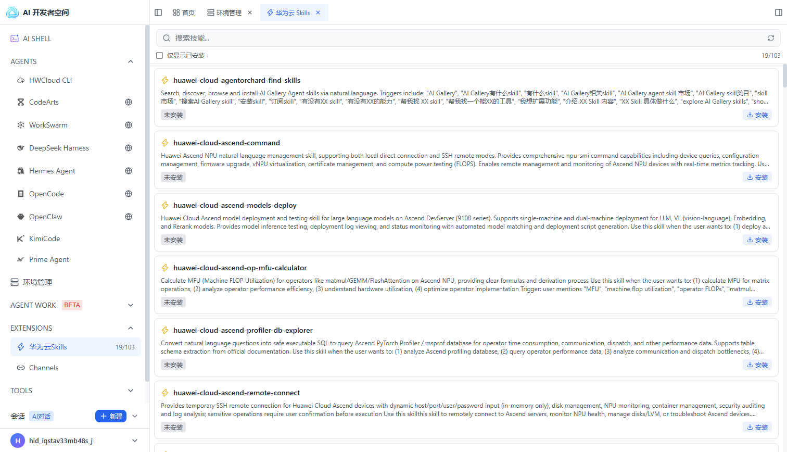
Channels 渠道
Channels 用于连接外部消息平台。Agent 通过它收发消息，从而接入飞书、微信、企业微信等平台。
| 渠道 | 说明 |
|---|---|
| 飞书 | 支持消息接收、机器人回复、文档协作 |
| 微信 | 支持扫码登录、消息收发、配对码验证 |
| 企业微信 | 支持 AI 机器人扫码授权与消息收发 |
操作步骤：
- 点击左侧 Channels 进入渠道列表
- 点击顶部「配置华为云 AKSK」，管理华为云访问凭证
- 选择目标渠道（飞书 / 微信 / 企业微信），点击连接或配置建立连接
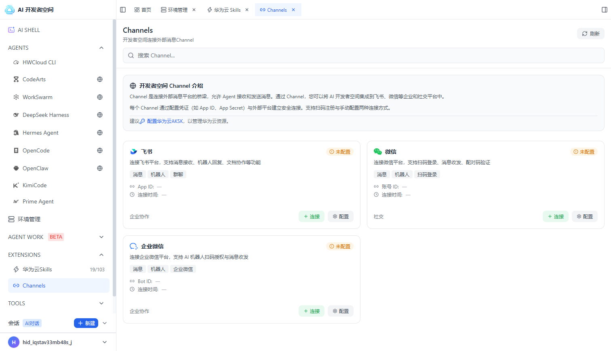
RESOURCES
RESOURCES 模块提供文档与资源入口，包含开发文档站和 Agent 接入指引：
| 入口 | 说明 |
|---|---|
| 文档站 | 《AI 开发者空间操作指南》（本文档），查看完整的产品使用说明 |
| Agent 接入 | IACMCPServer 使用指南文档 |
文档站
文档站 是 AI 开发者空间的官方操作指南文档，点击左侧菜单 RESOURCES → 文档站 即可进入。文档站涵盖以下内容：
- AI SHELL 的使用方法（AI 对话模式、命令行模式、会话配置）
- AGENTS 模块各智能体的操作说明（CodeArts、WorkSwarm 等）
- 环境管理的部署与配置指引
- 华为云 Skills 和 Channels 的接入说明
- TOOLS 模块（OpenViking、DevBridge）的使用指南
- RESOURCES、文件管理、设置与反馈等全部功能模块说明
Agent 接入
Agent 接入 提供 IACMCPServer 使用指南，指导开发者通过 MCP 协议将基础设施即代码能力接入到 AI 开发者空间。点击左侧菜单 RESOURCES → Agent 接入 即可跳转到 GitCode 上的 IACMCPServer 文档。
IACMCPServer 使用指南包含以下内容：
- IACMCPServer 概述：通过 MCP 协议暴露云基础设施部署能力
- 接入流程：配置 MCP 客户端（opencode、codearts、Cursor 等）
- 能力说明：支持多云资源编排、部署、排错与销毁全流程
- 配置说明：timeout、tool_call 等参数配置
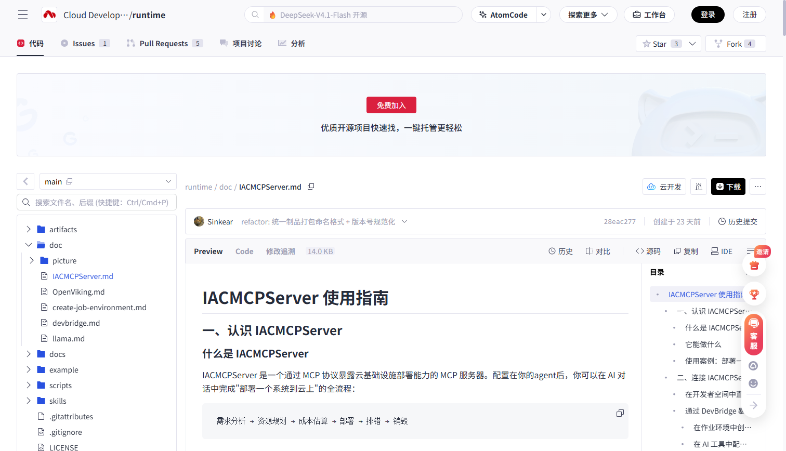
文件管理
点击右上角「展开右侧面板」，可打开文件管理器：
- 搜索文件名：按名称检索文件
- 批量操作：对多个文件执行批量处理
- 上传：上传本地文件
- 新建文件 / 新建文件夹：在工作区创建文件或目录
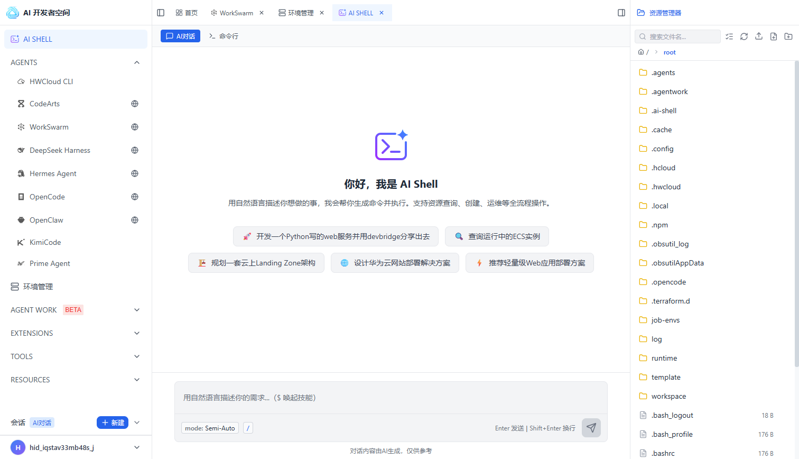
设置与反馈
| 入口 | 功能 |
|---|---|
| 设置 | 基本信息：账号 ID / 实名认证状态 / 账号中心；主题设置：浅色模式 / 深色模式 / 跟随设备 |
| 问题反馈 | 提交使用问题与意见反馈 |
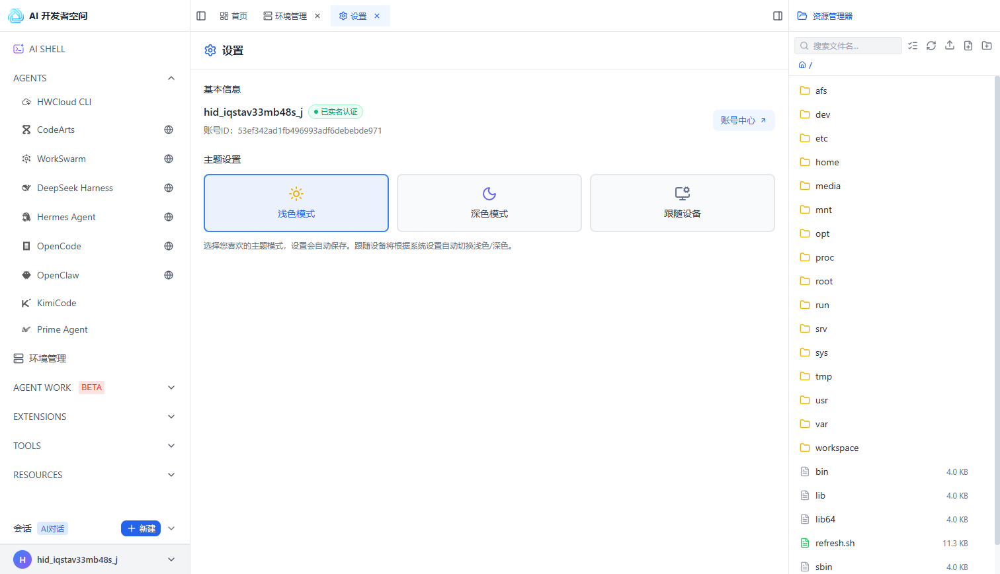
视频指导
通过视频快速了解 AI 开发者空间的核心功能与实操方法。